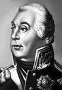
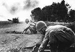
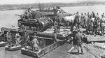

21 января – День инженерных войск

Инженерные войска прошли долгий и славный путь служения Отечеству. Первая инженерная школа, которая готовила военных инженеров для российской армии, была учреждена по указу Петра I от 21 января 1701 года. Важнейшим шагом на пути возрождения многовековых традиций, признания боевых заслуг всех поколений военных инженеров от петровских времен до наших дней стало учреждение Указом Президента Республики Беларусь № 157 от 26 марта 1998 года профессионального праздника — Дня инженерных войск.
Не было ни одного сражения, в котором бы не участвовали инженерные войска. Они верно служили России в Полтавской битве и при взятии неприступной крепости Измаил, на Бородинском поле и при обороне Севастополя в Крымской войне 1853 — 1856 годов, под Порт-Артуром и на полях первой мировой войны. Родина всегда высоко оценивала вклад инженерных войск в славные победы русского оружия. Так, в XIX — начале XX века 125 воинов инженерных войск за героизм, проявленный в боевых действиях, стали Георгиевскими кавалерами. Видную роль в развитии инженерных войск сыграли выдающиеся полководцы того времени Петр I, Александр Васильевич Суворов, Михаил Илларионович Кутузов.

Петру I принадлежит заслуга в создании регулярных инженерных войск в 1712 году, в применении переправочных средств, полевых укреплений для обеспечения боевых действий, в дальнейшем развитии способов укрепления государственных границ.

Венцом достижений русского военно-инженерного искусства XVIII века явилось взятие русскими войсками под руководством А.В. Суворова крупнейшей турецкой крепости Измаил. Существенное влияние на достижение поставленных целей оказали: маскировка районов сосредоточения войск, введение противника в заблуждение путем демонстрации подготовки к длительной осаде, строительство ложных батарей, а также заблаговременная подготовка инженерных средств обеспечения штурма (лестницы, фашины), организация рабочих (саперных) команд, их тренировка в устройстве переходов через рвы и штурме крепостных стен. Инженерные сооружения, оборудованные на реке Дунай, препятствовали проходу кораблей турецкого флота и лишали осажденных в крепости возможности получения помощи от своих войск.
Возрастание роли военно-инженерного искусства и инженерных войск еще более ярко проявилось в Отечественной войне 1812 года. Великий русский полководец фельдмаршал Михаил Илларионович Кутузов в письме императору Александру I отмечал, что занимаемую под Бородино позицию он намеревается усилить искусством. Это искусство нашло выражение в возведении на Бородинском поле знаменитых бастионов русской славы — Багратионовых флешей, батареи Раевского и других укреплений, на которых в дальнейшем французская армия была обескровлена и оказалась не в состоянии продолжать сражение. Попытки Наполеона сокрушить Россию в одном генеральном сражении провалилась.

Во время Севастопольской обороны 1854 — 1855 годов зародилась новая система укреплений войсковых позиций. Вместо узкой линии бастионов и связывающих их куртин (крепостных стен) впервые была применена укреплённая полоса глубиной 1000 — 1500 м, создавались защищённые позиции для артиллерии, впервые использован электрический способ взрывания. В конце XIX — начале XX века ведётся разработка теории инженерной подготовки территории страны к войне, чему посвящены труды военного инженера Константина Ивановича Величко «Инженерная оборона государств и устройство крепостей». В конце XIX — начале XX века инженерные войска рассматривались как технический род войск и, в отличие от боевых (пехоты, артиллерии и кавалерии), имели на вооружении технические средства, применяемые для обеспечения вооруженной борьбы. В разное время в их состав входили железнодорожные и электротехнические батальоны, телеграфные роты, воздухоплавательные отделения, автомобильные отряды и подразделения броневых сил, которые в последующем выделились в самостоятельные войска. В ходе Первой мировой и Великой Отечественной войн инженерные войска получили богатый опыт и дальнейшее развитие.

Вопросы инженерного обеспечения боевых действий войск и способы применения инженерных сил и средств всегда были в центре внимания руководства Вооруженных Сил. С самого начала Великой Отечественной войны они находились в поле зрения Ставки ВГК, которая своим приказом № 0450 от 28 ноября 1941 года «О недооценке инженерной службы и неправильном использовании инженерных войск и средств» определила значение инженерного обеспечения боевых действий войск как важного элемента, оказывающего большое влияние на ход и исход военных действий. Этим приказом была введена должность начальника инженерных войск Красной Армии с правом непосредственного доклада Верховному Главнокомандующему. Начальники инженерных войск фронтов и армий получили статус заместителей командующих с повышением воинских званий до генерал-полковника и генерал-майора соответственно. Была изменена структура инженерных органов центрального управления, управлений фронтов и армий с созданием штабов инженерных войск как их основы. Комплекс перечисленных мероприятий в значительной степени повысил эффективность управления, авторитет инженерных начальников и инженерных войск в целом. Забота Верховного Главнокомандования о целесообразном применении инженерных сил и средств способствовала быстрому улучшению инженерной подготовки войск, повышению эффективности выполнения задач инженерного обеспечения боевых действий.
При подготовке обороны Москвы из числа слушателей Военно-инженерной академии и Московского военно-инженерного училища было сформировано десять подвижных отрядов заграждения по 50 человек в каждом. В ходе боев, неся тяжелые потери, они непосредственно перед наступающими танками выставляли группы мин, подрывали дорожные сооружения. На этих минах подорвалось около 200 танков и 120-150 автомашин противника. Задачи инженерных войск несколько изменились с переходом наших войск в наступление. Наряду с решением задачи проделывания проходов в минных полях противника, восстановления мостов и переправ зимой 1941/1942 года инженерные войска прокладывали колонные пути в глубоком снежном покрове. Эта задача была успешно решена. Недооценка немецким командованием природных условий (результат пренебрежения изучением театра военных действий в инженерном отношении) привела к огромным потерям немцев в технике, застрявшей в снегу.
В ходе зимнего контрнаступления 1941/1942 года инженерные войска регулярно забрасывали в тыл противника команды разведчиков-подрывников. Только в феврале 1942 года саперы-подрывники одного батальона подорвали 7 мостов, установили 721 мину. За январь-март 1942 года инженерные войска Западного фронта оборудовали 58 переправ по льду, проложили 5387 километров колонных путей, навели 118 низководных мостов, сняли 21 644 мины противника. В апреле 1942 года было сформировано несколько инженерных бригад специального назначения. Эти бригады предназначались для развертывания минной войны. Каждая бригада состояла из пяти-семи батальонов инженерных заграждений, одного-двух электротехнических батальонов (создание электрилизуемых проволочных заграждений), батальона спецминирования (радиоуправляемые мины и фугасы). При подходе немцев летом 1942 года к Сталинграду инженерные войска возвели 1200 километров оборонительных рубежей. Особое значение в степных условиях приобрела задача водоснабжения, которую решили рота полевого водоснабжения и три гидротехнические роты. При обороне Сталинграда в полосе обороны 64-й армии саперы установили 140 тыс. мин, 80 фугасов, подорвали 19 мостов. На минных полях 64-й армии противник потерял за месяц 65 танков. В июне 1943 года началось формирование инженерно-танковых полков, на вооружении которых стояли танки Т-34, оборудованные минными тралами ПТ-3. Это была новинка, потрясшая немецкие войска. После первого применения этих тралов в Берлин было доложено о применении русскими новых танков, нечувствительных к минам.

Особую роль сыграли инженерные войска при подготовке обороны на Курской дуге. Замысел сражения состоял в том, чтобы упорной стратегической обороной измотать немецкие войска, нанести им большие потери и перейти в контрнаступление. Важную роль в подготовке оборонительных рубежей должны были сыграть инженерные войска. С апреля по июль было подготовлено восемь оборонительных полос на глубину 250-300 км. Протяженность отрытых траншей и ходов сообщения достигала 8 километров на километр фронта. Было построено, отремонтировано 250 мостов общей длиной 6.5 км и 3000 км дорог. Только в полосе обороны Центрального фронта (300 км) было установлено 237 тыс. противотанковых, 162 тыс. противопехотных мин, 146 объектных мин, 63 радиофугаса, 305 километров проволочных заграждений. Инженерные войска провели громадную работу по маскировке позиций и объектов, только на ложные аэродромы в полосе Воронежского фронта противник сбросил 140 тонн авиабомб. На позиции 81-й гвардейской стрелковой дивизии наступала 19-я танковая дивизия немцев. С 5 по 18 июля только на минах дивизия потеряла 100 танков и 1000 солдат. Удачное сочетание минных полей с огнем истребительно-противотанковой артиллерии привело к тому, что до 80% подорвавшихся танков составили безвозвратные потери. Ставкой ВГК было приказано впредь обязательно сочетать огонь артиллерии и минные поля. Умелое сочетание фортификационных оборонительных сооружений, минно-взрывных заграждений и огня всех видов оружия позволило нашим войскам устоять в обороне впервые за войну. С началом контрнаступления под Курском изменились задачи инженерных войск. Теперь предстояло не только устанавливать мины, а и снимать их, не разрушать мосты, а восстанавливать. Так, с началом контрнаступления только в полосе наступления 11 гв. армии в ночь перед атакой наши саперы сняли 30 тыс. противотанковых и 12 тыс. противопехотных мин. В ходе наступления впервые были успешно опробовано прикрытие обнажающихся флангов наступающих соединений минами. Эти мины на путях фланговых контрударов немцев выставляли подвижные отряды заграждений. Эти действия саперов позволяли не отвлекать наступающие части на защиту флангов, не бояться отсечения и окружения. После ряда безуспешных попыток выйти в тыл наступающим советским танкам и пехоте немцам пришлось отказаться от этого тактического приема, который они очень успешно применяли в 1941 – 1942 годах.
Накопленный за 1941 – 1943 годы опыт применения инженерных войск позволил успешно использовать их во всех последующих боях за освобождение страны и европейских стран в 1944 – 1945 годах. Одной из наиболее сложных и важных задач, возлагавшихся на инженерные войска в наступательных операциях Великой Отечественной войны, являлось инженерное обеспечение форсирования водных преград. При форсировании Днепра, Южного Буга, Одера и многих других рек воинами-саперами были проявлены мужество, отвага и массовый героизм. Осенью 1943 года при форсировании Днепра инженерные войска применили новинку — подводные мосты. Мост строился таким образом, что его проезжая часть была ниже поверхности воды на 30-40 см. Мост с воздуха не наблюдался. Несмотря на трудность наведения подобного типа переправ, новинка себя оправдала. Ни один из таких мостов не был разрушен ни авиацией, ни артиллерией противника. Значимость инженерных войск в достижении победы над врагом была подчеркнута Сталиным введением осенью 1943 года званий «Маршал инженерных войск» и «Главный маршал инженерных войск». Этим актом подчеркивалось, что инженерные войска играют ту же роль в разгроме врага, что и авиация, артиллерия и танкисты. Впереди наступающих частей активно действовали группы специального назначения. Они вели инженерную разведку местности предстоящих боевых действий, взрывали мосты, железнодорожные сооружения. Главный штаб партизанского движения нацелил партизанские отряды на тесное взаимодействие с группами инженерного спецназа. Во взаимодействии с инженерным управлением он разработал и осуществил летом-осенью 1943 года план «рельсовой войны». Сосредоточив силы на наиболее вероятных направлениях движения советских войск, немцы не предполагали продвижения танков и тяжелой артиллерии через болота. Но советские инженерные войска справились с труднейшей задачей устройства дорог через болота и смогли вывести танки и пехоту в тыл обороняющихся немцев. Штурмовые инженерные бригады в ряде случаев, кроме выполнения задач инженерного обеспечения штурма и прорыва укрепленных позиций противника, выполняли и задачи общеармейские. Так, в боях за Вильно в июне 1944 года 4-я штурмовая инженерно-саперная бригада прорвалась в центр города, уничтожив 2092 солдата противника, взяв в плен 3116 солдат и освободив концлагерь с 2800 заключенными.
За подвиги и воинский труд во славу Родины в годы Великой Отечественной войны 100 тыс. воинов инженерных войск награждено орденами и медалями, 655 из них присвоено звание Героя Советского Союза, 294 стали полными кавалерами ордена Славы. В годы войны 196 инженерных соединений, частей и подразделений удостоены звания гвардейских. Многим из них присвоены почетные наименования, отражавшие славный боевой путь советских Вооруженных Сил. Подвиг инженерных войск в годы Великой Отечественной войны будет жить в веках. После окончания войны инженерные войска широко привлекались к разминированию местности, обезвреживанию громадного количества неразорвавшихся снарядов и бомб, восстановлению мостов, дорог, железнодорожного транспорта, расчистке русел судоходных рек, обеспечению населенных пунктов и промпредприятий электроэнергией и водой. Много инженерных частей было передано в систему военно-строительных отрядов. Это и породило ошибочное мнение, что инженерные войска и строители — это одно и то же. Особая страница истории инженерных войск Советской Армии — афганская война. Противник очень быстро оценил, что в условиях подавляющего превосходства русских в авиации, артиллерии, бронетехники едва ли не единственным средством лишить советские войска возможности использовать свои преимущества является минная война. Разрешение войскам на применение мин для защиты блокпостов, перекрытия путей душманских караванов, установку минных полей дистанционным способом на путях движения бандформирований быстро привело к значительному снижению их активности. В ходе войны инженерные войска, кроме минной и противоминной войны, решали задачи восстановления дорог и мостов, добычи и очистки воды, оперативной и тактической маскировки. Однако нерешительность тогдашнего руководства страны, половинчатость принимаемых мер, попытки сэкономить средства и деньги за счет перенапряжения сил войск не позволяли в полной мере решать, в том числе и задачи инженерного обеспечения боя (операции). Последней задачей инженерного обеспечения, которую пришлось решать саперам в Афганистане, было обеспечение отвода войск с занимаемых позиций и обеспечение марша через перевал Саланг на территорию СССР. Несмотря на обещания душманов «устроить русским кровавую баню», они так и не решились приблизиться к советским колоннам, настолько плотно были закрыты минно-взрывными заграждениями все подступы к основным маршрутам движения советских войск.
За мужество и героизм, проявленные при оказании интернациональной помощи в Республике Афганистан, воины-саперы сержанты Н.П. Чепик, В.П. Синицкий, Н.И. Кремениш и А.И. Исрафилов были удостоены высокого звания Героя Советского Союза, а полковник Г.К. Лошкарев стал первым в Сухопутных войсках полным кавалером ордена «За службу Родине в Вооруженных Силах СССР».
В инженерных войсках проходили службу прославленные ученые, изобретатели и композиторы, выдающиеся полководцы и военачальники. В их числе фельдмаршал М.И. Кутузов, начальник Генерального штаба Маршал Советского Союза Н.В. Огарков, заместитель Министра обороны по строительству и расквартированию войск маршал инженерных войск Н.Ф. Шестопалов, а также маршалы инженерных войск М.П. Воробьев, А.И. Прошляков, В.К. Харченко, С.Х. Аганов и многие другие.